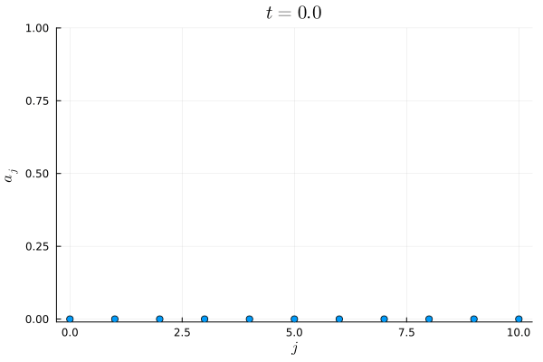
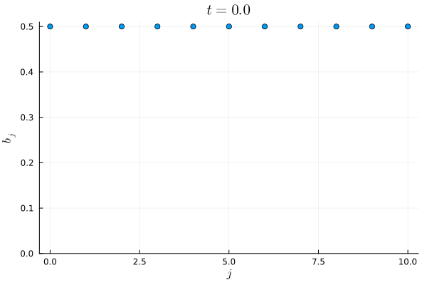
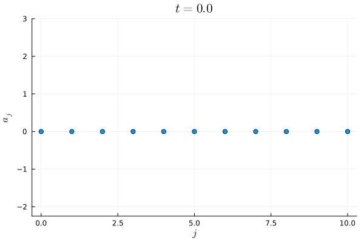
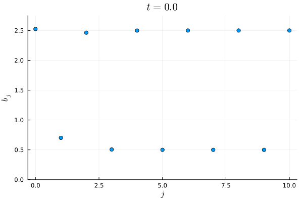
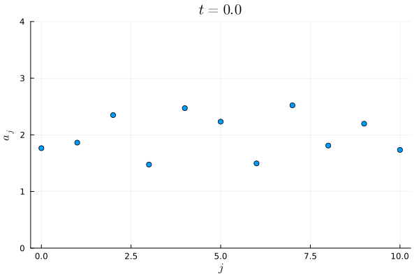
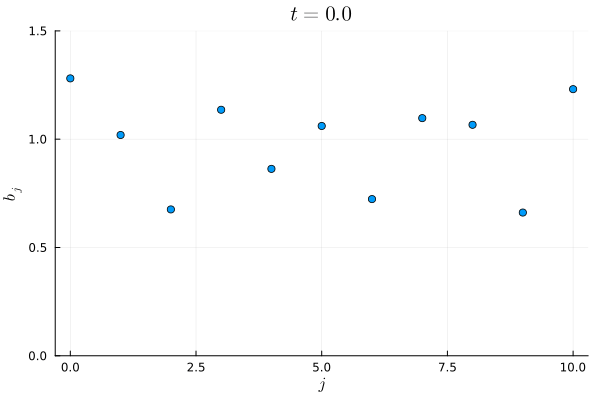
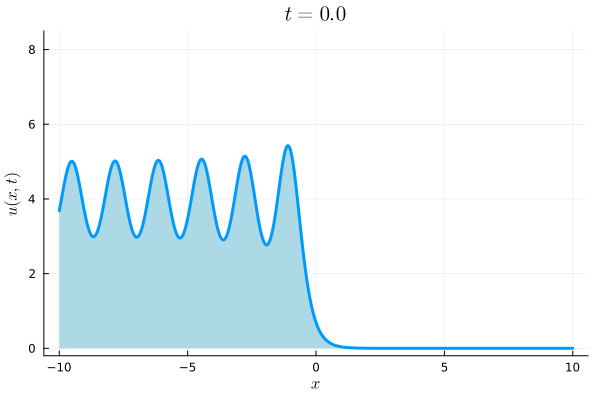
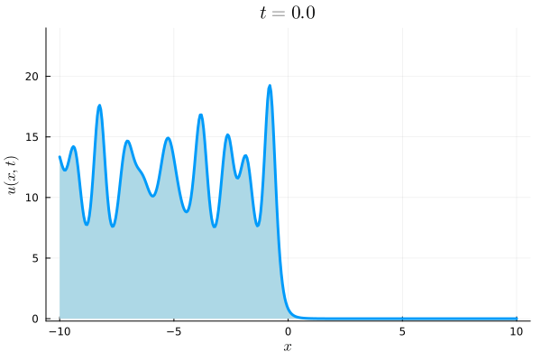

Computing with orthogonal polynomials for integrable systems: A Riemann–Hilbert approach
This is the companion page to the poster of the same name. For more information, see the following arXiv versions of our papers:
A Riemann–Hilbert approach to computing the inverse spectral map for measures supported on disjoint intervals
The Akhiezer iteration
Orthogonal polynomial recurrence coefficients
We consider weight functions of the form
$$
w(x)=\sum_{j=1}^{g+1}𝟙_{[a_j,b_j]}(x)h_j(x)\left(\sqrt{x-a_j}\right)^{\alpha_j}\left(\sqrt{b_j-x}\right)^{\beta_j},\quad \alpha_j,\beta_j\in\{-1,1\},\quad \Sigma=\bigcup_{j=1}^{g+1}[a_j,b_j].
$$
Here, each $h_j$ is positive on $[a_j,b_j]$ and sufficiently analytic. The FIK RHP for these weight functions is as follows:
Find \(\mathbf{Y}_n:\mathbb{C}\setminus\Sigma\to\mathbb{C}^{2\times2}\) such that
$$
\begin{aligned}
&\mathbf{Y}_n~\text{is analytic in}~\mathbb{C}\setminus\Sigma,\\
&\mathbf{Y}_n^+(z)=\mathbf{Y}_n^-(z)\begin{pmatrix}
1 &w(z)\\0 &1
\end{pmatrix},\quad z\in\bigcup_{j=1}^{g+1}(a_j,b_j),\\
&\mathbf{Y}_n(z)=\left(\mathbf{I}+\mathrm{O}(z^{-1})\right)\begin{pmatrix}
z^n &0\\0&z^{-n}
\end{pmatrix},\quad z\to\infty,\\
&\mathbf{Y}_n(z)=\mathrm{O}\begin{pmatrix}
1 &1+|z-a_j|^{\alpha_j/2}\\
1 &1+|z-a_j|^{\alpha_j/2}
\end{pmatrix},\quad z\to a_j,\\
&\mathbf{Y}_n(z)=\mathrm{O}\begin{pmatrix}
1 &1+|z-b_j|^{\beta_j/2}\\
1 &1+|z-b_j|^{\beta_j/2}
\end{pmatrix},\quad z\to b_j.
\end{aligned}
$$
After applying a sequence of deformations, this RHP can be solved numerically, and the recurrence coefficients
and Cauchy integrals of the orthogonal polynomials corresponding to the weight function \(w\) can be recovered.
The parameter \(n\) corresponds to the degree of the polynomials, so \(N\) pairs of orthogonal polynomial recurrence coefficients can be computed in only \(\mathrm{O}(N)\) arithmetic operations.
The Toda lattice
The semi-infinite Toda lattice as considered by Deift, Li, and Tomei with boundary condition $b_{-1}(t)=0$ is defined by semi-infinite operators
$$
\mathbf{X}(t)=\begin{pmatrix}
a_0(t) &b_0(t)\\
b_0(t) &a_1(t) &b_1(t)\\
&b_1(t) &a_2(t) &b_2(t)\\
&&\ddots &\ddots &\ddots
\end{pmatrix},\quad \mathbf{B}(t)=\begin{pmatrix}
0 &b_0(t)\\
-b_0(t) &0 &b_1(t)\\
&-b_1(t) &0 &b_2(t)\\
&&\ddots &\ddots &\ddots
\end{pmatrix},
$$
using the relation
$$
\dot{\mathbf{X}}(t)=[\mathbf{B}(t),\mathbf{X}(t)],
$$
where $[\cdot,\cdot]$ denotes the standard matrix commutator. Given an initial condition $\mathbf{X}(0)=\mathbf{J}(w)$
corresponding to the Jacobi operator (semi-infinite matrix of recurrence coefficients) for some orthogonal polynomial weight $w$, the time-dependent $a_j(t),b_j(t)$ are given by the respective recurrence coefficients
$\check a_j,\check b_j$ of the orthogonal polynomials with weight $\mathrm{e}^{tx}w(x)$. That is, if $\mathbf{X}(0)=\mathbf{J}(w)$, then $\mathbf{X}(t)=\mathbf{J}(w\mathrm{e}^{t\diamond})$,
where $\mathbf{J}(w)$ is the Jacobi operator for the orthogonal polynomials corresponding to the weight function $w$.
The initial condition
\begin{equation*}
\mathbf{X}(0)=\begin{pmatrix}
0 &1/2\\
1/2 &0 &1/2\\
&1/2 &0 &1/2\\
&&\ddots &\ddots &\ddots
\end{pmatrix},
\end{equation*}
corresponds to Chebyshev-$U$ polynomials on $[-1,1]$, so the Toda lattice is evolved by setting $g=0$, $\alpha_1=\beta_1=1$, and $h_1(x)=\mathrm{e}^{tx}$ in the weight function above.
The time evolution of the first 11 tridiagonal elements of the solution $\mathbf{X}(t)$ is pictured below.


A more exotic initial condition corresponds to a Chebyshev-\(T\)-like weight on \([-3,-2]\cup[2, 3]\) (\(g=1\), \(\alpha_j=-1\), \(\beta_j=-1\), \(j=1,2\)).
In this case, \(a_n(0)=0\) for all \(n\), and \(b_n(0)\) is nearly 2-periodic. The time evolution of the first 11 tridiagonal elements of the solution of the Toda lattice \(\mathbf{X}(t)\) with this initial condition is pictured below.


A quasi-periodic initial condition corresponds to a Chebyshev-\(W\)-like weight on \([0.1, 1.1]\cup[2, 3]\cup[3.5, 4]\) (\(g=2\), \(\alpha_j=-1\), \(\beta_j=1\), \(j=1,2,3\)).
The time evolution of the first 11 tridiagonal elements of the solution of the Toda lattice \(\mathbf{X}(t)\) with this initial condition is pictured below.


Finite genus KdV solutions
Genus $g$ solutions to the KdV equation can be obtained by solving the following RHP:
Find \(\mathbf{S}_{x,t}:\mathbb{C}\setminus\left(\bigcup_{j=1}^g\left([-b_j,-a_j]\cup[a_j,b_j]\right)\right)\to\mathbb{C}^{1\times 2}\) such that
$$
\begin{aligned}
&\mathbf{S}_{x,t}~\text{is analytic in}~\mathbb{C}\setminus\left(\bigcup_{j=1}^g\left([-b_j,-a_j]\cup[a_j,b_j]\right)\right),\\
&\mathbf{S}_{x,t}^{+}(z)=\mathbf{S}_{x,t}^{-}(z) \left(\begin{array}{cc}
0 & \mathrm{e}^{\mathrm{i}\Omega_j(x,t)} \\
\mathrm{e}^{-\mathrm{i}\Omega_j(x,t)} & 0
\end{array}\right), \quad z \in (a_j,b_j), \\
&\mathbf{S}_{x,t}^{+}(z)=\mathbf{S}_{x,t}^{-}(z)\left(\begin{array}{cc}
0 & \mathrm{e}^{-\mathrm{i}\Omega_j(x,t)} \\
\mathrm{e}^{\mathrm{i}\Omega_j(x,t)} & 0
\end{array}\right), \quad z \in (-b_j,-a_j), \\
& \mathbf{S}_{x,t}(z)=\begin{pmatrix}
1 &1
\end{pmatrix}+\mathrm{O}\left(z^{-1}\right), \quad z \rightarrow \infty, \\
&\mathbf{S}_{x,t}(z)=\mathrm{O}\begin{pmatrix}
|z-a_j|^{-1/2} &|z-a_j|^{-1/2}
\end{pmatrix}, \quad z\to a_j,\\
&\mathbf{S}_{x,t}(z)=\mathrm{O}\begin{pmatrix}
1 &1
\end{pmatrix}, \quad z\to b_j,\\
&\mathbf{S}_{x,t}(z)=\mathrm{O}\begin{pmatrix}
|z+a_j|^{-1/2} &|z+a_j|^{-1/2}
\end{pmatrix}, \quad z\to-a_j,\\
&\mathbf{S}_{x,t}(z)=\mathrm{O}\begin{pmatrix}
1&1
\end{pmatrix}, \quad z\to-b_j.
\end{aligned}
$$
Here, \(x\) and \(t\) are parameters that correspond to the space and time variables in the KdV solution, meaning that the problem has constant jump conditions.
Soliton gas KdV solutions
Soliton gas solutions to the KdV equation can be obtained by solving the following RHP:
Find \(\mathbf{Y}_{x,t}:\mathbb{C}\setminus\left([-\eta_2,-\eta_1]\cup[\eta_1,\eta_2]\right)\to\mathbb{C}^{1\times 2}\) that satisfies
$$
\begin{aligned}
&\mathbf{Y}_{x,t}~\text{is analytic in}~\mathbb{C}\setminus\left([-\eta_2,-\eta_1]\cup[\eta_1,\eta_2]\right),\\
& \mathbf{Y}_{x,t}^{+}(z)=\mathbf{Y}_{x,t}^{-}(z) \left(\begin{array}{cc}
1 & 0 \\
-\mathrm{i} r(z) \mathrm{e}^{8z^3t-2 z x} & 1
\end{array}\right), \quad z \in (\eta_1,\eta_2), \\
&\mathbf{Y}_{x,t}^{+}(z)=\mathbf{Y}_{x,t}^{-}(z)\left(\begin{array}{cc}
1 & \mathrm{i} r(z) \mathrm{e}^{2 z x-8z^3t} \\
0 & 1
\end{array}\right), \quad z \in (-\eta_2,-\eta_1), \\
& \mathbf{Y}_{x,t}(z)=\left(\begin{array}{ll}
1 & 1
\end{array}\right)+\mathrm{O}\left(z^{-1}\right), \quad z \rightarrow \infty, \\
&\mathbf{Y}_{x,t}(z)=\mathrm{O}\begin{pmatrix}
1+|z-\eta_1|^{\alpha/2} &1
\end{pmatrix}, \quad z\to\eta_1,\\
&\mathbf{Y}_{x,t}(z)=\mathrm{O}\begin{pmatrix}
1+|z-\eta_2|^{\beta/2} &1
\end{pmatrix}, \quad z\to\eta_2,\\
&\mathbf{Y}_{x,t}(z)=\mathrm{O}\begin{pmatrix}
1&1+|z+\eta_1|^{\alpha/2}
\end{pmatrix}, \quad z\to-\eta_1,\\
&\mathbf{Y}_{x,t}(z)=\mathrm{O}\begin{pmatrix}
1&1+|z+\eta_2|^{\beta/2}
\end{pmatrix}, \quad z\to-\eta_2,
\end{aligned}
$$
where \(r(z)=h(z)\left(\sqrt{z-\eta_1}\right)^{\alpha}\left(\sqrt{\eta_2-z}\right)^{\beta}\), \(\alpha,\beta\in\{\pm1\}\)
on \([\eta_1,\eta_2]\), and \(r(z)=r(-z)\). Here, \(h\) is positive on \([\eta_1,\eta_2]\) and suitably analytic. The evolution of a soliton gas solution computed using the above RHP is pictured below.

This RHP can be extended by adding jump conditions on additional intervals. This corresponds to KdV solutions with spectral data supported on several intervals on the imaginary axis.
The evolution of such a solution is pictured below.

|